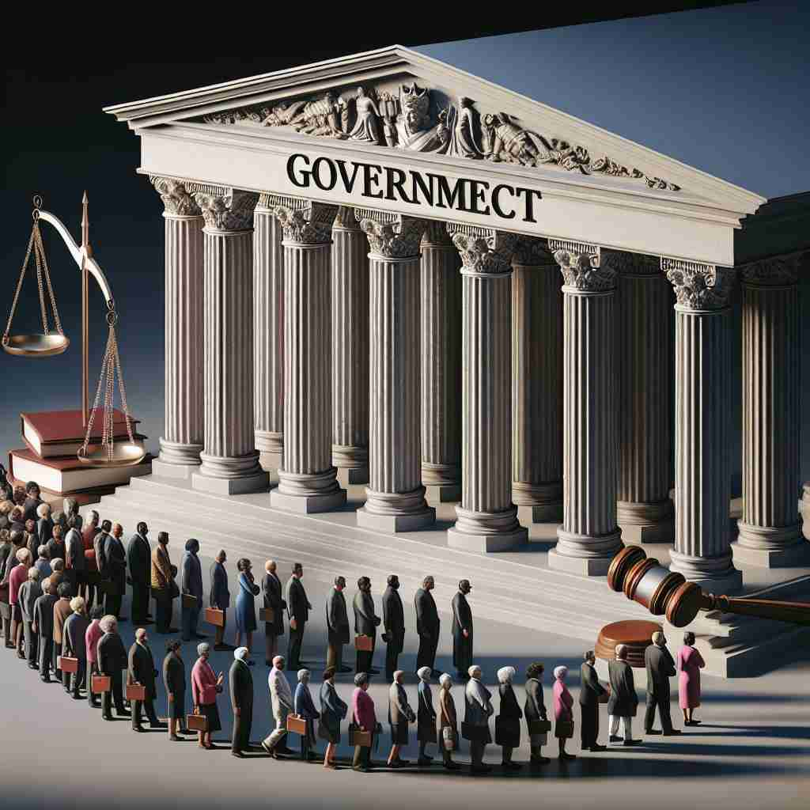

🗝️ n. the group of people who officially control a country
🖼️ 在一个宏伟的政府大楼里，各部门领导正在举行一次重要会议。他们聚集在圆桌周围，讨论国家政策，制订未来计划。这个场景生动展示了'government'作为控制国家的官方人员群体的含义。
🔍 想象'government'是一个掌舵的团队。这个团队不仅包括人员（核心含义），还包括他们使用的系统、方法，以及他们拥有的权力。通过这个形象，你可以轻松联想到'government'的各种含义，从执政团队到治理方式，再到政权本身。

💬 The government officials present are making important decisions.

💬 During the government election, many citizens came to vote.
💬 The local government team organized a park clean-up to help the community.

💬 The government representatives are meeting to discuss important issues.
🗝️ n. the system used for controlling a country
🖼️ 在一个喧闹的课堂上，老师正在向学生们讲述不同的国家政体。她在黑板上画出一张图，展示民主制、君主制和联邦制等多种政府系统，帮助学生理解'government'作为国家控制系统的多样性。
💬 Democracy is a form of government.
❓ 从控制国家的人扩展到整个控制系统
🗝️ n. the process or manner of controlling a country
🖼️ 想象一个历史博物馆，其中一个展厅专注于展现不同历史时期的统治过程。从古代的帝王独裁到现代的民主选举，展厅中的展品生动描述了'government'作为管理国家的一系列过程和方法。
💬 Good government is essential for a country's development.
❓ 从控制系统延伸到控制的过程或方式
🗝️ n. the right to control a country or state
🖼️ 在一个国际法庭的场景中，法官正在宣读关于国家主权的判决，强调一个国家拥有自主管理其内部事务的权利。这体现了'government'作为国家或州的控制权的含义。
💬 The party won the election and took over government.
❓ 从控制行为引申为控制的权力
🗝️ n. the particular group of people in office at a given time
🖼️ 在一个热闹的选举之夜，新闻频道正在现场直播计票情况。新政府即将上任，记者们纷纷讨论他们即将实施的政策。这描绘了'government'作为在职的特定执政群体的含义。
💬 This policy was introduced by the previous government.
❓ 具体化为某一时期执政的特定群体